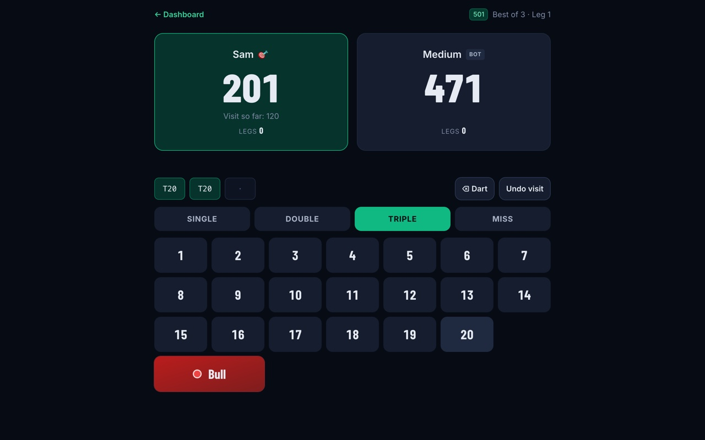
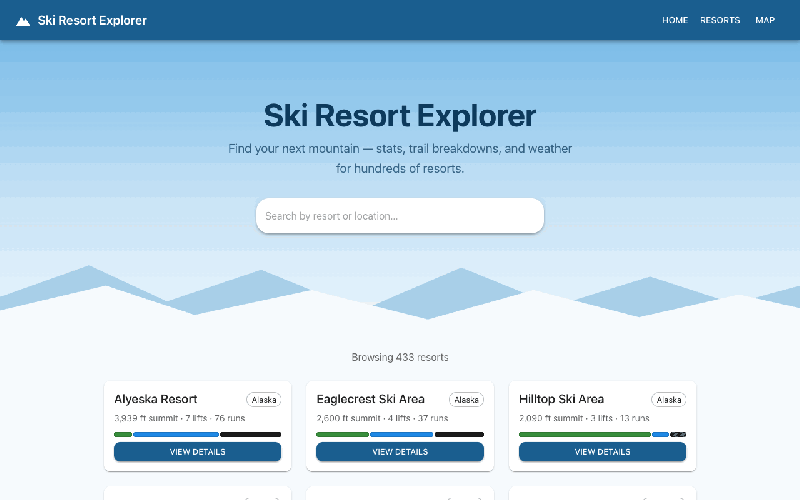

Software Engineer
I build full-stack web apps, identity automation, and the infrastructure-as-code underneath it. Right now that means automating onboarding and offboarding for 400+ Microsoft 365 users across 100+ properties with Python and the Microsoft Graph API, and shipping React + FastAPI apps like DartMetrics with hundreds of automated tests and CI/CD behind them.


$ python provision.py terminate manager619 --dry-run Terminating: Property Manager at Elm Court manager619@example.com [enabled] Property Manager [dry-run] would disable the account and revoke every session [dry-run] would remove from group: Elm Court Staff [dry-run] would remove from group: Site Managers [dry-run] would remove 1 license(s) manual step if mail must be retained: convert the mailbox to shared (Exchange admin center)
$ pip install entra-stale-accounts $ entra-stale-accounts check --days 90 USER PRINCIPAL NAME DISPLAY NAME ENABLED LAST SIGN-IN DAYS ----------------------------- ------------ ------- ------------ ----- nina@contoso.onmicrosoft.com Never Nina true never never sam@contoso.onmicrosoft.com Stale Sam true 2026-01-01 229 2 stale account(s) past a 90-day threshold.
Python, TypeScript, JavaScript, SQL, Java, C/C++, HTML/CSS
React, FastAPI, Flask, SQLAlchemy / Alembic, pytest, Playwright
PostgreSQL, MySQL, SQLite
Git/GitHub, GitHub Actions (CI/CD), Terraform, Docker, REST APIs, JWT Auth, Microsoft Graph API, Microsoft Entra ID, Microsoft 365, Azure, Render
Delaware State University · 2025
Delaware Technical Community College · 2020